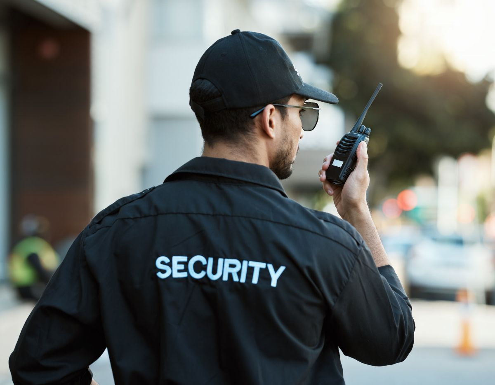

“Entendemos que la seguridad es un eje necesario para que exista una buena calidad de vida en las personas. Nuestros vecinos han manifestado sentir mucho miedo de ser víctimas de robos con intimidación y/o violencia, robo de vehículos, robo por sorpresa y otros tipos de delitos de mayor connotación social, por eso nos ocuparemos de impulsar medidas que devuelvan a los habitantes de nuestra comuna el derecho a sentirse seguros y tranquilos”